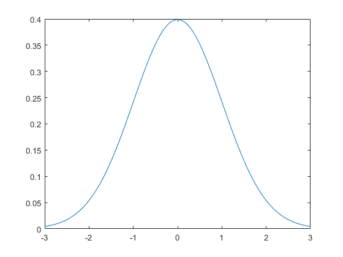

gaussian
Create a Gaussian distribution.
Syntax
gauss_distr = gaussian(x) gauss_distr = gaussian(x, magnitude) gauss_distr = gaussian(x, magnitude, mean) gauss_distr = gaussian(x, magnitude, mean, variance)
Description
gaussian returns a Gaussian distribution f(x) with the specified magnitude, mean, and variance. If these values are not specified, the magnitude is normalised and values of variance = 1 and mean = 0 are used. For example running
x = -3:0.05:3; plot(x, gaussian(x));
will plot a normalised Gaussian distribution.
Note, the full width at half maximum of the resulting distribution can be calculated by FWHM = 2 * sqrt(2 * log(2) * variance).
Inputs
x |
x-axis variable |
Optional Inputs
magnitude |
bell height (default = normalised) |
mean |
mean or expected value (default = 0) |
variance |
variance ~ bell width (default = 1) |
Outputs
gauss_distr |
Gaussian distribution |
See Also
getWin